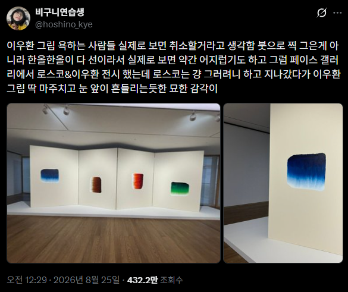
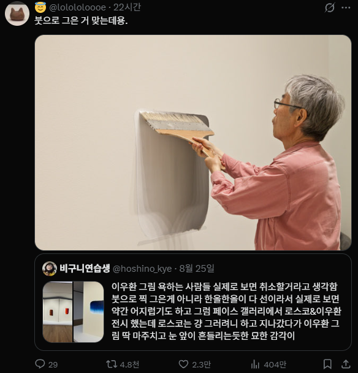

한올한올 다 그었기 때문 ㄷㄷ

이 아님 ㄷㄷ

한올한올 다 그었기 때문 ㄷㄷ

이 아님 ㄷㄷ
근데 저 작품 집 벽에 걸어놓으면 분위기 좋을듯
심플하니 예쁘긴 함
나는 제법 마음에 들어 장당 5만원이면 살만할듯 10만원은 너무 비싸고
요즘 집 인테리어 9할이 미니멀 모던 이라
저런 그림과 어울리긴 해
작은게 1-2억 할걸?
똥을싸라 그러면 환호받고 유명해진다.
이게 맞다
저 작가 본인도 위조 작품을 감별하지 못해서 논란있었잖앜ㅋ. 본인 피셜 붓 한 번에 엄청난 집중과 호흡이 중요해서 절대로 위작이 없을 거라 했는데, 본인이 위작 구별도 못해서 개망신ㅋㅋ (위작의 캔버스 재질을 과학적으로 분석해서 법원에서 이미 위작 결론난 작품ㅋㅋ)
현대미술에 댓이 시끌시끌하길래 방금 저 화간 누군가 나무위키 보고옴
위작내용보니 그저 ㅋㅋㅋㅋㅋㅋㅋㅋㅋㅋㅋㅋㅋㅋㅋㅋㅋㅋㅋㅋ
나로선 현대미술은 이해못함.
최근 뉴스에도 엄청 나왔었는데 못들어봤음?ㅋㅋㅋ
미술전공인데 현대미술 싫어했음. 애초에 아름다운걸 만들어 내고싶은 마음에 전공한건데 현대미술, 개념미술은 이건 뭐형상학적으로 아름다운것도 아니고. 대충 주둥이 좀 털면서 의미부여하면 작품이 되는것. 그거 진짜 적응 안되더라. 이론이든 실습이든 배울수록 공감이 안감..
근데 나이 좀 들고 보러 갈만한테 마땅찮아서 그냥 이것저것 많이 보러 다니다 보니 이젠 어느정도 이해가 됨 사물을 바라보는 방향성이나 미적 추구가 나이가 들면서 변한탓도 있겠지.
최근에 서울시립미술관에 유영국선생님 회고전 보러 다녀왔는데 진짜 한 3시간을 앉아 있었던것 같음.. 같은 사물을 봄에도 저런 색은 어디서 발견한걸까. 자연에 없는 직선으로 자연을 나타내는 저 대담함에 놀라고.
결론은 내 취향과 상관없이 많이 볼수록 느껴지는것들은 달라짐. 물론 일부러 볼 필요는 없음. 관심이 있고 이해하고싶다는 의지가 있을때 그냥 많이 보러 다니셈. 어느순간 가슴에 와 닿는것들이 생김.
그러면 지금은
대충 주둥이 털어서 의미부여하는 척 잘해주면 예술이 된다
라는 거에 어느 정도 회의적이라는 거?
나는 그냥 지나가는 일반인인데 나도 딱 저런 느낌이라서
그런 질문을 던진 작품이 fountain 임. 개념미술의 등장
맞지. 지금이야 개념을 받아들이는자와 못받아들이는자의 차이일 뿐인데, 당시로서는 천지개벽수준이었을거임 ㅋㅋ
회의감이 어느정도 덜어졌다는거지.
현대미술의 일부분은 일종의 철학과도 닿아있음. 관심이 없으면 단순 개똥철학이지만
관심이 있으면 단순한 미감/미술/조형 너머의 관념적인부분과도 만날 수 있음.
같은 결로 쿠사마야요이 작품을 별로 안좋아함. (안좋아한다면서 모마에서 파는 30마넌짜리 호박 피규어는 또 가지고 있다;;)
강박을 작품으로 승화한것은 사실이지만 결국 정신질환의 발로인데 이걸 예술로 볼 수 있는가- 의 문제. 나는 납득이 어려운 편.
약빨로 비트찍는 래퍼들이 진짜 자기실력이라고 보는것에설왕설레가 있는것과 비슷한 느낌임.
결론은 그냥 내 입장에서 받아들여지느냐 아니냐 정도의 차이고 받아들인다고 높은수준의 소양을 가진것도 아니고 받아들여지지 않는다고 수준이 낮은것도 아님.
미술은 말 그대로 내가 봤을때 아름다움이 있는가. 작품 뒤 관념과 서사가 내 기준에 아름다운가. 인것임.
이해하고 싶다면 많이 보면 된다. 시간을 들일 필요가 있다. 이정도로 매우 심플하다고 봄.
붓의 실 하나하나가 그은 거긴 해~
도배하는 할배랑 저할배랑 구분도 어려움
당당하게 개소리하는 애들은 이유가 뭘까
기술적인 완성도는 의미 없어졌지.. 극단적으로 그림 하나 안배우고 작품활동 하는 아웃사이더 아트라고도 부르고
기술적인 완성도는 의미 없어졌지.. 극단적으로 그림 하나 안배우고 작품활동 하는 아웃사이더 아트라고도 부르고
현대미술은 뻔뻔한놈이 제일 잘나가는듯 없어도 있는척 모르면서 아는척해야 대우받고 가치가 올라감
작가의 의도나 방식과 다르게 커버치는 새끼들은 대체 뭐냐 ㅋㅋㅋㅋㅋㅋ
사실상 가장 관심없는 새끼들 아님?
한 번을 똑바로 안찾아봤다는거잖아 ㅋㅋ
전에 어디서 누구는 열흘을 고민하고 거기에 찍는다던데
현대미술 싫다하지만 현대 인테리어를 생각하면 현대미술과 같이 가고있음
똥을 싸고 먹어라 그럼 유명해진다 ㅡSir. Nee amy
한올한올 그린 것 같은거는 대형붓에 모가 많아서 그래보이는 것 뿐인데... 바본가...
옛날에는 현대미술 이해 못했는데 얼마전에 넷플릭스 러브데스로봇에서 지마블루 보고 어렴풋하게 이해할거 같음
작품 한개를 보는게아니라 그 작품에 담긴 서사를 즐기는거였음
울집에도 뒀는데 인쇄본ㅋㅋ 프레임까지 하면 개당 20-40 나오더라
마케팅임
화장품같이